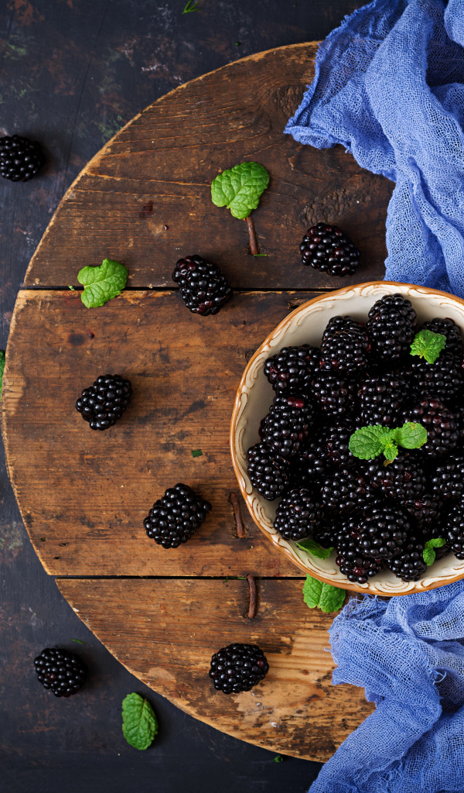
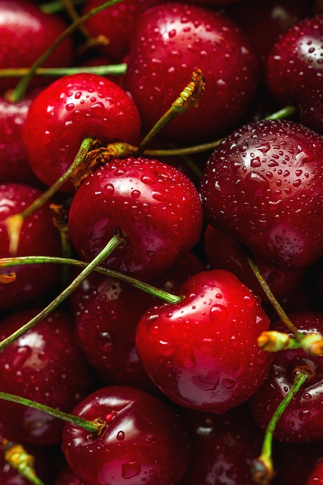

| Описание | Содержащиеся витамины |
Ежевика

|
Вишня или черешня? |
|
||
|---|---|---|---|---|---|---|
| Ягоды – многосемянные плоды с сочной серединой, тонкой оболочкой и твердой косточкой внутри. Они схожи с фруктами и не имеют принципиального отличия. | Каждый год исследователи выясняют все новые и новые подробности о пользе ягод, а также расширяют список витаминов, содержащихся в них. |
Многие плохо различают эти две ягоды, каждая из которых по-своему хороша.
Основные критерии для различия:
|
 | Содержат 20-40% витамина С | ||
Рассматриваемые в таблице ягоды:
|
Витамины, содержащиеся в ягодах:
|
С ботанической точки зрения, вишня – это косточковый фрукт, но в быту её традиционно причисляют к ягодам. | ||||